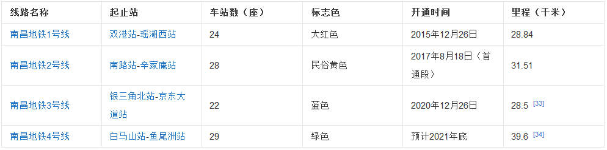
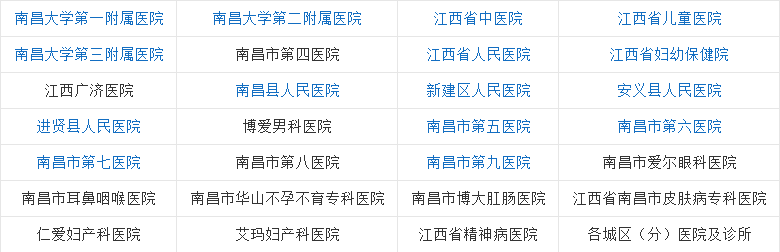

南昌市经济发展迅速,在全球发展最快的20个城市中名列第15名,是中国乃至全球未来最具发展潜力的城市之一。 南昌市设有三个国家级开发区(南昌高新技术产业开发区、南昌经济技术开发区和南昌小蓝经济技术开发区)和红谷滩新区、临空经济区、综合保税区。 2020年南昌市地区生产总值5745.51亿元,按可比价格计算,比上年增长3.6%。其中,第一产业增加值235.28亿元,增长2.2%;第二产业增加值2676.89亿元,增长3.8%;第三产业增加值2833.35亿元,增长3.4%。
南昌是江西最重要的综合交通枢纽之一,105、316、320等十几条国道在南昌市交汇,多条出城快速通道使得南昌市的交通四通八达,高速公路网络直贯湘、鄂、皖、浙、闽、粤等邻省而与全国联网,从南昌市驱车安徽、湖北、湖南、浙江等周边省省会的距离全部在5小时以内,形成了一个以南昌为中心的“5小时经济圈”。
南昌环城高速、昌九高速公路、梨温高速公路、昌金高速公路、昌赣高速公路、赣粤高速公路、沪昆高速公路等
105国道、316国道、320国道等
南昌市已建设和建成城市一环线体系,启动和建设规划城市二、三环体系。
南昌铁路交通发达,南昌铁路局为中国重要的铁路局之一,南昌是京九铁路经过的唯一省会城市,京九铁路、沪昆铁路、昌九城际铁路、昌福铁路(向莆铁路)、沪昆高铁、昌赣客运专线、昌景黄高铁(建设中)、昌九客运专线(待建)、昌长城际铁路(规划)等都在南昌交汇。南昌南郊向塘站有98股道,为全国第二大铁路货运编组站。
南昌境内拥有3个中国大型特等车站:南昌西站(高铁客运站)和南昌火车站、南昌东火车站(高铁站,即将建设);两个县级高铁站:进贤南站(进贤站)、横岗站(建设中);一个大型枢纽站:向塘站;一个机场站:乐化站(建设中);多个货运站:南昌北站、南昌南站、莲塘站、三江镇站等。
南昌水运交通便利,水路可通赣江、抚河、锦江和鄱阳湖沿岸城镇及长江各重要口岸(武汉,重庆,上海,南京)。设立18座观光轮渡码头。建设和运行6座大型换乘码头(滕王阁南昌港、秋水广场码头、中山桥码头、生米国体中心码头、昌南新城码头、阳明公园(八一桥)码头)水路运输最大内河装载能力为1000吨,可由九江沿长江水域经上海港出海。
南昌昌北国际机场是中国重要的枢纽干线机场、国际客货运枢纽。2018年,南昌机场新开通了茅台、万州、南通、宜昌、无锡、舟山、长白山、大庆等国内和莫斯科、新加坡、清迈等国际城市航线;加密了重庆、成都、沈阳、南京、兰州、济南、青岛、丽江、惠州、湛江、揭阳、包头等城市的航班。在南昌机场运营的国内外航空公司已达43家,开通定期通航城市83个,同比2017年增加4个,累计开通定期航线161条,同比增加19条,初步形成了以南昌为中心,基本覆盖省会城市和国内主要城市,连接泰国、越南、柬埔寨、印尼等东南亚国家和俄罗斯等洲际地区的空中交通网络。2018年南昌机场完成旅客吞吐量1352万人次。
2021年4月24日,由我国自主设计建造、中铁十八局集团承建的国内首个国产大飞机生产试飞中心——中国商飞江西生产试飞中心全面竣工,中国商飞江西生产试飞中心位于江西省南昌航空城核心区域。紧临瑶湖机场,是我国实施国产大飞机战略的代表性项目之一,主要功能是承担国产ARJ21飞机的生产试飞支持和运营保障等。
南昌轨道交通线网规划为网格+放射状结构,由5条线路构成,全长198公里,共设站146座。第一轮建设规划于2009年7月获得国务院批准,其中1号线一期工程全长28.8公里,设站24座,总投资210亿元,已于2015年12月26日建成通车;2号线一期工程全长23.8公里,设站21座,总投资160亿元,首通段已于2017年8月18日建成通车;3号线全长28.5公里,设站22座,已于2020年12月26日建成通车。包括3、4号线和1、2号线二期工程的第二轮建设规划,全长82.3公里,总投资610.9亿元,已于2015年5月获得国务院批准。4号线均已全面开工建设,计划于2021年通车。
南昌公交拥有公交车辆3800余标台,开通公交线路210余条,运营里程达近4000千米,是国内线路最完善的公交系统之一,也是国内五星服务公交运营系统,拥有亚洲最先进的GPS定位报站系统,通过公交车专用智能语音播报显示车站牌,实时准确到站信息。随着南昌轨道交通线路的逐渐开通,南昌市交通管理局的交通发展思路演变为“轨交、公交、大巴与微公交相辅相成”。
过江(湖)通道南昌市用江河湖泊众多,在江西省母亲河上为打通两岸交通,南昌市修建了数多座桥梁及水下立交、隧道(含地铁过江隧道)。在湖泊、河流上为方便交通也修建了多座桥梁、隧道。为分流交通道路,南昌市还修建了分隔隧道。南昌市最早的第一座大桥是中正大桥(今八一大桥)。修建于1936年,由国民党南昌市城市规划人员设计建设。1949年南昌解放,扩建了大桥并更名为八一大桥,1998年拆除重建(为今天的八一大桥)。2016年南昌市在赣江修建红谷隧道(为千里赣江第一隧),并创下中国最大的水下立交隧道工程的称号。注:以下数据截止2017年。
2018年,全市拥有各类医疗卫生机构2245个,其中医院122个;拥有床位3.35万张,其中医院床位2.82万张。拥有各类专业卫生技术人员4.15万人,其中执业(助理)医师1.48万人。全市婴儿死亡率为2.28‰,5岁以下儿童死亡率为3.55‰,每十万孕产妇死亡人数为3.74人。
文革后期南昌市开启电视时代,至南昌共有省级和市级电视台给一个,分别为江西省电视台和南昌市国际广播电视台。江西电视台共设立8个电视频道(含一个南昌专属的江西2台—都市频道)南昌电视台共设立了5个频道。2008年南昌市第一部专属的南昌方言电视剧《松柏巷里万家人》全部播出。
2018年,全市完成邮电业务总量449.59亿元,比上年增长112.8%。其中,邮政业务总量63.49亿元,增长47.5%;电信业务总量386.1亿元,增长129.5%。快递业务收入30.86亿元,发送快递27718万件,其中国内同城快递4958万件、国内异地快递22542万件、国际及港澳台快递218万件。订销报刊累计数8921万份。年末全市固定电话用户90.5万户,下降3.1%;移动电话用户696.8万户,增长13.6%;互联网宽带接入用户数237.9万户,增长28.7%。
2019年南昌入选首批5G商用城市。
2018年,全市城镇职工参加基本医疗保险人数118.7万人,比上年增加1.4万余人。参加失业保险人数63.09万人,增加0.84万人。城镇参加基本养老保险人数为199.68万人,其中参保职工139.36万人,参保离退休人员60.32万人;企业养老金社会化发放率达100%。2018年完成廉租住房租赁补贴23009户。
2018年,全市拥有各类社会福利单位127个,床位1.58万张;收养各类人员0.68万人。城镇社区服务站(中心)785个;城市居民最低生活保障家庭2.40万户,保障人数4.39万人;农村居民最低生活保障家庭4.81万户,保障人数8.32万人;城乡医疗救助人数17.20万人。